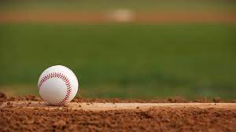
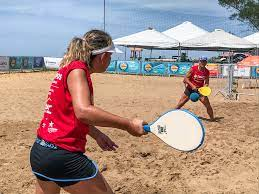

Tão amigos quanto o homem, os esportes são uma das invenções mais benéficas do homem. Além de manter o corpo saudavel, ainda auxiliam na criação de uma série de comportamentos positivos, como a humildade, a união, a empatia, dentre outros.
E os esportes com bola são, sem nenhuma dúvida, os mais populares. mas voce sabea diferença entre alguns deles? È justamente isso que iremos descobrir abaixo.
| Esportes | Origem | Ambiente | Objetivo | Equipe | ||
| 1 |  | Baseball | EUA,1971 | Campo com 1/4 de cículo, de 92 a 108,2m de raio | Realizar o maior numero de corridas | Nove jogadores em cada time. |
| 2 | |
Beach soccer | 1930,Brazil | Quadra de areia com 35 ou 37 m x 26ou 27 de largura | Realizar gols no campo adversario | Cinco jogadores em cada time. |
| 3 | |
Biribol | 1968,Brazil. | Piscina com 4 x 8 x 1,3m | Derrubar a bola no campo adversario | 2 a 4 jogadores por time. |
| 4 |  | Frescobol | Brazil,1946. | Ao ar livre | Manter a bola no ar pelo maior tempo possivel | Geralmente um contra um. |
saiba mais acessando o link